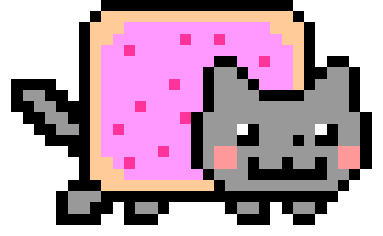

10/04/2025
Ainsi, la journée débute par une visite du lieu iconique qu'est Madame Tussaud !

Photo prise après que le groupe se soit évanoui car Beyoncé avait trop d'aura
Vous savez, moi je ne pense pas qu'il y ait de bonnes ou de mauvaises situations...

A l'aide

Le musée était franchement excellent avec un parc d'attractions
en son centre et une partie horrifique.
Bien meilleur que le
frauduleux musée grévin et ses tickets a 50euros!
Cependant, bien d'autres surprises nous attendaient dans le
quartier punk/rock de Londres, Camden Town...
On a croisé les 5èmes qui étaient aussi en voyage a Londres dans ce même parc!
La devanture des boutiques la-bas...
Guess who's this ?